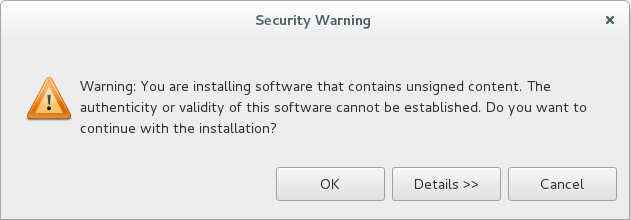
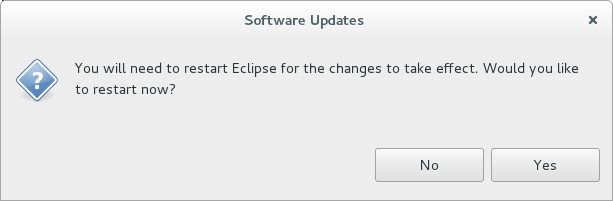
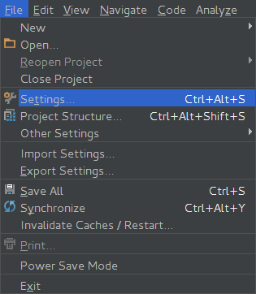
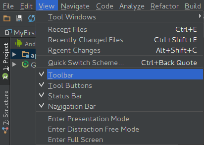
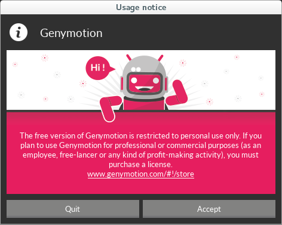
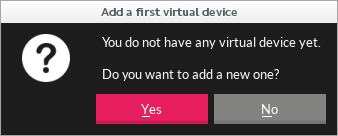
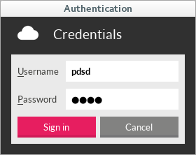

Genymotion 2.6.0
O versiune gratuită pentru emulatorul Genymotion poate fi descărcată de pe http://www.genymotion.com după ce se creează un cont. Alternativ, executabilele pot fi descărcate de la următoarele locații:
- Linux
student@eim2016:~$ cd /opt student@eim2016:/opt$ sudo wget http://eim2016.andreirosucojocaru.ro/resources/genymotion-2.6.0-<platforma>.bin
unde
platformaare valoarealinux_x86- arhitecturi pe 32 de bițilinux_x64- arhitecturi pe 64 de bițiubuntu15_x64- distribuția Ubuntu 15 pe 64 de biți
- Windows
Emulatorul Genymotion are nevoie de o mașină virtuală în contextul căreia să ruleze.
- Linux
student@eim2016:~$ sudo apt-get install openbox virtualbox
- Windows - se poate folosi executabilul integrat cu VirtualBox sau acesta poate fi instalat separat de la https://www.virtualbox.org/wiki/Downloads.
Se instalează emulatorul Genymotion pornind de la executabilele descărcate.
- Linux
student@eim2016:/opt$ sudo chmod +x genymotion-2.6.0-<platforma>.bin student@eim2016:/opt$ sudo ./genymotion-2.6.0-<platforma>.bin student@eim2016:/opt$ sudo rm -f genymotion-2.6.0-<platforma>.bin
- Windows - se rulează fișierul
.exeîn cauză
Plugin pentru Medii de Execuție Integrate (IDE)
Eclipse
- Se pornește Eclipse Mars 1 (4.5.1):
- Linux
/opt/eclipse/eclipse - Windows - se apelează executabilul
eclipse.exedin directorul în care s-a realizat instalarea
- Se instalează plugin-ul Genymotion pentru Eclipse Mars 1
- Help → Install new Software
- în secțiunea Work with se completează locația http://plugins.genymotion.com/eclipse/

- se apasă butonul Add… și în câmpul Name se specifică o denumire sugestivă (spre exemplu, Genymotion Plugin); se apasă butonul OK

- se selectează Genymobile; se apasă butonul Next

- se vor afișa detaliile pentru instalare; se apasă butonul Next

- se acceptă termenii și condițiile pentru licențierea conținutului; se apasă butonul Finish

- se confirmă instalarea de programe care au conținut nesemnat

- se repornește Eclipse Mars 1 (4.5.1)

- se specifică locația la care este instalat emulatorul Genymotion Window → Preferences → Genymobile → Genymotion, completându-se câmpul Genymotion directory


- fereastra de gestiune a dispozitivelor mobile virtuale Genymotion se deschide folosind pictograma corespunzătoare din Toolbar sau apăsând
Ctrl+6.

Android Studio
- Se pornește Android Studio 1.5.1:
- Linux
sudo /opt/android-studio/bin/studio.sh - Windows - se apelează executabilul
studio.exedin directorul în care s-a realizat instalarea
- Se instalează plugin-ul Genymotion pentru Android Studio
- File → Settings

- în fereastra Settings, se accesează opțiunea Plugins; se apasă butonul Browse repositories…

- în fereastra Browse Repositories… se selectează intrarea Genymotion (aceasta poate fi și căutată, astfel încât identificarea să se realizeze mai facil); se apasă butonul Install plugin

- se confirmă descărcarea și instalarea plugin-ului Genymotion

- încărcarea propriu-zisă a plugin-ului Genymotion va fi realizată după repornirea mediului integrat de dezvoltare Android Studio

- accesarea plugin-ului Genymotion poate fi realizată din bara de unele, cu condiția ca aceasta să fie vizibilă (conform configurării din View → Toolbar)


- trebuie precizată și locația în care este instalat emulatorul Genymotion (
/opt/genymobile/genymotion):


Configurare Dispozitiv Virtual
Se lansează în execuție Genymotion.
- Linux -
/opt/genymotion/genymotion
lib32z1, este necesar ca aceasta să fie instalată din altă sursă.
Se modifică fișierul care conține lista locațiilor de la care pot fi descărcate pachetele (/etc/apt/sources.list), specificându-se o nouă sursă:
student@eim2016:~$ sudo gedit /etc/apt/sources.list
- /etc/apt/sources.list
# ... deb http://ftp.ro.debian.org/debian jessie main # ...
Se actualizează baza de date cu locațiile de la care pot fi descărcate pachetele.
student@eim2016:~$ sudo apt-get update
Se instalează pachetul lib32z1.
student@eim2016:~$ sudo apt-get install lib32z1
- Windows - se rulează fișierul
genymotion.exedin directorul de instalare al emulatorului.

Inițial, se solicită descarcarea unei imagini corespunzătoare pentru un dispozitiv mobil virtual.

- Se apasă butonul Add (+)

- Se realizează procesul de autentificare prin furnizarea numelui de utilizator și a parolei, prin accesarea butonului Sign in


pdsd și parola pdsd.
- Se caută dispozitive mobile virtuale în funcție de versiunea de Android (4.1.1) și se selectează pentru instalare Nexus S - 4.1.1 - API 16 - 480×800; se apasă butonul Next


- Se afișează detaliile dispozitivului mobil care se dorește a fi instalat pentru care se poate indica și o denumire sugestivă; se apasă butonul Next

- După ce s-a realizat instalarea, se apasă butonul Finish.

- Pornirea unui dispozitiv mobil virtual se face apăsând butonul Play.